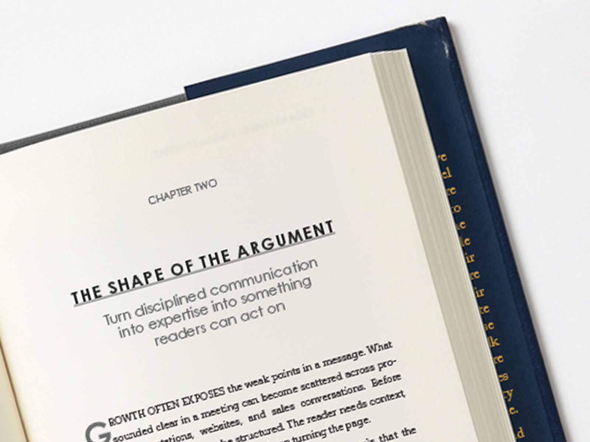

Book Design, Typesetting, and Production for Serious Authors
Ruff Press designs polished, print-ready interiors for authors, publishers, consultants, experts, and organizations producing books, reports, and long-form documents.

Thoughtful book production. Clean structure. Professional output.
Ruff Press helps turn finished manuscripts into polished pages ready for the way they will actually be published. From nonfiction books and technical manuscripts to reports, guides, and content-heavy publications, the work is grounded in clarity, consistency, readability, and production discipline.
From finished manuscript to production-ready book.
A quiet look at the production workflow: page systems, hierarchy, notes, exports, preflight, and finished book detail.
Interior systems, spreads, and production details.
Sample work should show the real range of the page: chapter openings, body text, technical content, reports, jackets, and publishing-ready files.


The difference between formatting and a real interior system.
Before Ruff Press
- Default templates or inconsistent styling
- Crowded pages and weak hierarchy
- Unclear handling of notes, figures, and tables
- Last-minute file issues at upload or print
- A book that feels assembled rather than designed
After Ruff Press
- Designed interior system shaped around the manuscript
- Professional typesetting and readable page rhythm
- Clear handling of complexity and recurring elements
- Platform-ready production files
- A book that reads and presents like it should
For books and long-form work that need more than formatting.
Interior Book Design
Tailored page design shaped around the manuscript, its structure, and the reading experience.
Typesetting and Page Layout
Clean, consistent composition for books, reports, guides, and long-form documents.
Complex Nonfiction Production
Careful handling of tables, charts, images, captions, footnotes, references, callouts, and layered content.
Cover and Jacket Coordination
Support for coordinating interiors with covers, jackets, trim size, spine needs, and final production specs.
EPUB and Digital Publishing Prep
Digital file preparation for EPUB workflows and common book distribution platforms when needed.
Every manuscript has its own architecture.
A serious book is not just poured into a layout. It needs hierarchy, rhythm, margins, running elements, notes, captions, tables, and production details that work together from first page to last.
Ruff Press builds the interior system around the content, the audience, and the final publishing path.
Built for serious authors, experts, publishers, and organizations.
Authors
Writers with a finished manuscript who want a professional interior ready for publication.
Consultants and Experts
Professionals turning intellectual property, frameworks, or subject matter expertise into a book.
Small Publishers
Independent publishers that need reliable design, typesetting, and production support.
Publishing Consultants
Editors, coaches, and publishing partners who need a dependable production resource.
Organizations
Businesses, nonprofits, educators, and institutions producing reports, manuals, guides, or research publications.
Complex Projects
Manuscripts with images, tables, notes, citations, callouts, multiple sections, or detailed publishing specs.
Clear deliverables, careful files, and a production-minded process.
Designed Interior System
A thoughtful design approach for chapter openings, headings, body text, notes, captions, and recurring elements.
Typeset Pages
Professionally composed pages with attention to spacing, hierarchy, readability, and consistency.
Print-Ready PDF
Final PDF files prepared to meet print, platform, printer, or publisher requirements.
EPUB, If Needed
Digital publishing preparation for EPUB workflows and common book distribution platforms.
Revision Proof
Review files for corrections, adjustments, and final approval before delivery.
Final File Check
A final production pass before handoff, with optional InDesign package delivery when appropriate.
A better quote starts with the right information.
If you have these details ready, the review process is faster and more accurate.
Project Basics
- Manuscript word count
- Trim size
- Genre or category
- Interior only, cover, or jacket coordination
Publishing Needs
- Print, EPUB, or both
- KDP, IngramSpark, Apple Books, Kobo, Barnes & Noble Press, offset printer, or publisher specs
- Deadline or launch window
Complexity Details
- Images, tables, or charts
- Footnotes, endnotes, or references
- Callouts, sidebars, or special sections
- Front matter and back matter needs
Manuscript Status
- Final or near-final manuscript
- Edited and proofread text
- Image files gathered
- Known platform or printer requirements
From manuscript review to final production files.
1. Review Manuscript and Specs
Share the manuscript, trim size, platform or printer requirements, complexity details, and timeline.
2. Quote and Production Plan
Receive a clear estimate and a practical plan based on the actual needs of the project.
3. Design Sample Pages
A page system is developed for the manuscript, including hierarchy, body text, headings, and recurring elements.
4. Typeset, Proof, Revise, and Deliver
The full project is typeset, reviewed, revised, checked, and delivered in the required final formats.
For work where readability, structure, and production quality matter.
Good book design supports the reading experience. Dense manuscripts and layered content need structure, patience, and production discipline.
The goal is simple: a book that reads clearly, looks professional, and is ready for the way it will actually be published.
Some projects are better handled elsewhere.
Cheap Template Formatting
If the goal is the lowest possible price and a generic layout, Ruff Press is probably not the right fit.
Unfinished Manuscripts
Projects still changing heavily every day are not ready for final design and typesetting.
Rush Jobs Without Review Time
Good production needs enough time for design, proofing, correction, and final checks.
Projects Where Quality Does Not Matter
Ruff Press is for work where readability, structure, and professional presentation matter.
A boutique production studio for finished work.
Ruff Press focuses on design, typesetting, and long-form document production. The work is disciplined, thoughtful, and built to hold up on the page.
Experience includes hundreds of books and publications across nonfiction, technical, educational, business, religious, self-help, cooking, travel, and other long-form categories.
Have a finished manuscript or long-form project ready for production?
Send the basics and Ruff Press will review the scope, complexity, and production needs.
Email hello@ruffpress.com with your project type, approximate word count or page count, timeline, publishing platform, and any elements such as images, tables, charts, footnotes, references, or callouts.